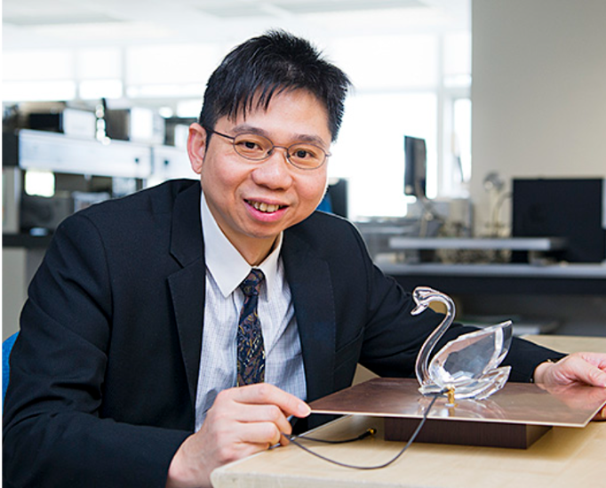

We are Glassdio
We are a Hong Kong deep-tech company built on long-term research from City University of Hong Kong, backed by granted patents and additional patent-pending technologies in glass‑concept antenna design. Our team brings together a distinguished professor, a entrepreneurial microwave industry experts in microwave products, and together with energetic young engineers — providing a reliable foundation for collaboration. Powered by unique solution approaches and our proprietary, novel Glassdio materials, our 5G glass‑concept antennas deliver superior real‑world results—dramatically improving transceive performance for both handheld and stationary 5G devices.
Our business strategy embeds environmental protection and social responsibility as we design, manufacture, and supply innovative, compact, and cost‑effective products with a sustainable footprint—plus the added benefit of elegant, transparent aesthetics.
Why Choose Us?
Fifth-generation (5G) networks are widely deployed. The 3.5 GHz mid band is the most cost effective and broadly adopted spectrum, delivering higher data rates and lower latency than 4G while supporting high capacity and dense access.
However, 3.5 GHz experiences higher path loss, greater blockage sensitivity, and reduced building penetration, especially in rainy days. Even the lowest loss entry path—windows—often adds several decibels of loss, depending on glazing and incidence angle and distance apart to window.
As a result, users may see reduced data rates or coverage blind spots, including inside cars, buses, and trains.
Mass produced 5G devices (smartphones, tablets, CPE, 5G network camera) offer low cost and high performance. Beyond personal communications, they serve as compute nodes, Wi Fi/5G hotspots, control interfaces, and UAV controllers, enabling rapid, cost effective prototyping without bespoke hardware.
There is a strong need to improve reception and extend coverage for these devices, especially in blind spot areas, to maintain reliable operation—particularly in rainy conditions. Our 5G external antennas and lens antenna series can fit different situation to improve the signal receptions.
Our Solution
Our Team

Prof. Kwok Wa LEUNG
Prof. Leung was born in Hong Kong. He received the B.Sc. degree in Electronics and Ph.D. degree in electronic engineering from the Chinese University of Hong Kong, Hong Kong in 1990 and 1993, respectively. In 1994, he joined the Department of Electrical Engineering at City University of Hong Kong (CityU) and Prof. Leung was the Chair of the IEEE AP/MTT Hong Kong Joint Chapter for the years of 2006 and 2007. He was the Technical Program Chair of several IEEE conferences. He was an Editor for HKIE Transactions and a Guest Editor of IET Microwaves, Antennas and Propagation, the IEEE Antennas and Wireless Propagation Letters and the IEEE Transactions on Antennas and Propagation (TAP). From 2013 to 2016, Prof. Leung was appointed as the Editor-in-Chief of the TAP, which is the most prestigious journal in the field. He was a Distinguished Lecturer of the IEEE Antennas and Propagation Society from 2012 to 2014. Prof. Leung received the International Union of Radio Science (USRI) Young Scientists Awards in Japan and Russia, in 1993 and 1995, respectively. He was the Associate Head of the Department from 2017 to 2019. In 2006, he was a Visiting Professor in the Department of Electrical Engineering, The Pennsylvania State University, USA.
Dr. Lee Wai Ki, Mike
Dr. Mike W. K. Lee was born in Hong Kong. He earned his Ph.D. from the CityUHK in 2015. In 2000, he co-founded his own company with a sales partner, assuming leadership roles in design and production. His company specialized in C/Ku/Ka-band low noise block downconverters, radar detectors, LNAs, GPS modules, and motion satellite antennas, producing over 10 million units under brands such as Gardiner, Calamp, and Interwave. He notably designed and became the sole supplier of Ka-band MMDS LNBs for Cable TV Hong Kong and provided OEM services for manufacturing Ka band LNBs for US Echostar, Inc. Dr. Lee was among the first to mass produce these technologies in Hong Kong and China.